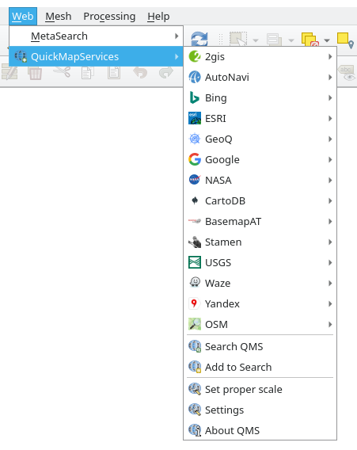
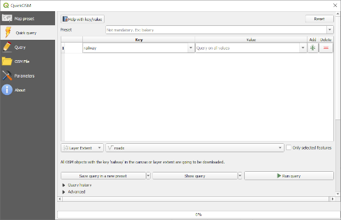

Now that you can install, enable and disable plugins, let’s see how this can
help you in practice by looking at some examples of useful plugins.
The goal for this lesson: To familiarize yourself with the plugin interface
and get acquainted with some useful plugins.
9.2.1. ★☆☆ Follow Along: The QuickMapServices Plugin
The QuickMapServices plugin is a simple and easy to use plugin that adds base maps
to your QGIS project.
It has many different options and settings.
Let’s start to explore some of its features.
Start a new map and add the roads layer from the training_data
Geopackage.
Install the QuickMapServices plugin.
Click on Web ► QuickMapServices.
The first menu lists different map providers (OSM, NASA) with available maps.
Click on an entry and you would load the base map into your project.
Nice! But one of the main strengths of QMS is to provide access to many data providers.
Let’s add them.
Click on Web ► QuickMapServices ► Settings
Go to the More services tab.
Read carefully the message of this tab and if you agree click on the
Get Contributed pack button.
Click Save.
Reopen the Web ► QuickMapServices menu you will see
that more providers are available.

Choose the one that best fits your needs, and load the data in the project!
It is also possible to search trough the now available data providers
Open the plugin’s search tab by clicking on Web ► QuickMapServices ► Search QMS.
This option of the plugin allows you to filter the available base maps
by the current extent of the map canvas or using a search word.
Click on the Filter by extent and you should see one service available.
If no service is found, zoom out and pan around the world (or your location)
or search with a keyword.
Click on the Add button next to a returned dataset to load it.
The base map will be loaded and you will have a background for the map.
With an incredible simple interface, the QuickOSM plugin allows you to download
OpenStreetMap data.
Start a new empty project and add the roads layer from the
training_data GeoPackage.
Install the QuickOSM plugin.
The plugin adds two new buttons in the QGIS Toolbar
and is accessible in the Vector ► QuickOSM menu.
Open the QuickOSM dialog. The plugin has many different tabs: we will use the
Quick Query one.
You can download specific features by selecting a generic Key or be more
specific and choose a specific Key and Value pair.
Tip
if you are not familiar with the Key and Value
system, click on the Help with key/value button. It will open a
web page with a complete description of this concept of OpenStreetMap.
Look for railway in the Key menu and let the Value be
empty: so we are downloading all the railway features without specifying
any values.
Select Layer Extent in the next drop-down menu and choose roads.
Click on the Run query button.

After some seconds the plugin will download all the features tagged in OpenStreetMap
as railway and load them directly into the map.
Nothing more! All the layers are loaded in the legend and are shown in the map
canvas.
Warning
QuickOSM creates temporary layer when downloading the data. If you
want to save them permanently, click on the icon next to the
layer and choose the options you prefer. Alternatively you can open the
Advanced menu in QuickOSM and choose where to save the data in the
Directory menu.
9.2.3. ★★★ Follow Along: The QuickOSM Query engine
The quickest way to download data from QuickOSM plugin is using the Quick query
tab and set some small parameters. But if you need some more specific data?
If you are an OpenStreetMap query master you can use QuickOSM plugin also with
your personal queries.
QuickOSM has an incredible data parser that, together with the amazing query engine
of Overpass, lets you download data with your specific needs.
For example: we want to download the mountain peaks that belongs into a specific
mountain area known as Dolomites.
You cannot achieve this task with the Quick query tab, you have to
be more specific and write your own query. Let’s try to do this.
Start a new project.
Open the QuickOSM plugin and click on the Query tab.
Copy and paste the following code into the query canvas:
<!--
This shows all mountains (peaks) in the Dolomites.
You may want to use the "zoom onto data" button. =>
-->
<osm-script output="json">
<!-- search the area of the Dolomites -->
<query type="area">
<has-kv k="place" v="region"/>
<has-kv k="region:type" v="mountain_area"/>
<has-kv k="name:en" v="Dolomites"/>
</query>
<print mode="body" order="quadtile"/>
<!-- get all peaks in the area -->
<query type="node">
<area-query/>
<has-kv k="natural" v="peak"/>
</query>
<print mode="body" order="quadtile"/>
<!-- additionally, show the outline of the area -->
<query type="relation">
<has-kv k="place" v="region"/>
<has-kv k="region:type" v="mountain_area"/>
<has-kv k="name:en" v="Dolomites"/>
</query>
<print mode="body" order="quadtile"/>
<recurse type="down"/>
<print mode="skeleton" order="quadtile"/>
</osm-script>
Note
This query is written in a xml like language. If you are more
used to the OverpassQL you can write the query in this language.
And click on Run Query:
The mountain peaks layer will be downloaded and shown in QGIS:
You can write complex queries using the Overpass Query language.
Take a look at some example and try to explore the query language.
Open the plugin by clicking on the new icon in the toolbar or in the
Plugins ► Data Plotly menu
In the following example we are creating a simple ScatterPlot of two fields
of the sample_points layer.
In the DataPlotly Panel:
Choose sample_points in the Layer filter, cl for
the X Field and mg for the Y Field:
If you want you can change the colors, the marker type, the transparency and
many other settings: try to change some parameters to create the plot
below.
Once you have set all the parameters, click on the Create Plot
button to create the plot.
The plot is interactive: this means you can use all the upper buttons to resize,
move, or zoom in/out the plot canvas. Moreover, each element of the plot is interactive:
by clicking or selecting one or more point on the plot, the corresponding point(s)
will be selected in the plot canvas.
You can save the plot as a png static image or as an html file by clicking
on the or on the button in the lower right corner
of the plot.
There is more. Sometimes it can be useful to have two (or more) plots showing
different plot types with different variables on the same page. Let’s do this!
Go back to the main plot settings tab by clicking on the button
in the upper left corner of the plugin panel
Change the Plot Type to Box Plot
Choose group as Grouping Field and ph as
Y Field
In the lower part of the panel, change the Type of Plot from
SinglePlot to SubPlots and let the default option
Plot in Rows selected.
Once done click on the Create Plot button to draw the plot
Now both scatter plot and box plot are shown in the same plot page. You still
have the chance to click on each plot item and select the corresponding features
in the map canvas.
Tip
Each plot has its own manual page available in the tab.
Try to explore all the plot types and see all the other settings available.
There are many useful plugins available for QGIS. Using the built-in tools for
installing and managing these plugins, you can find new plugins and make
optimum use of them.
{kind=link}


 icon next to the
layer and choose the options you prefer. Alternatively you can open the
Advanced menu in QuickOSM and choose where to save the data in the
Directory menu.
icon next to the
layer and choose the options you prefer. Alternatively you can open the
Advanced menu in QuickOSM and choose where to save the data in the
Directory menu.
{kind=link}


 or on the
or on the  button in the lower right corner
of the plot.
button in the lower right corner
of the plot. button
in the upper left corner of the plugin panel
button
in the upper left corner of the plugin panel
 tab.
Try to explore all the plot types and see all the other settings available.
tab.
Try to explore all the plot types and see all the other settings available.